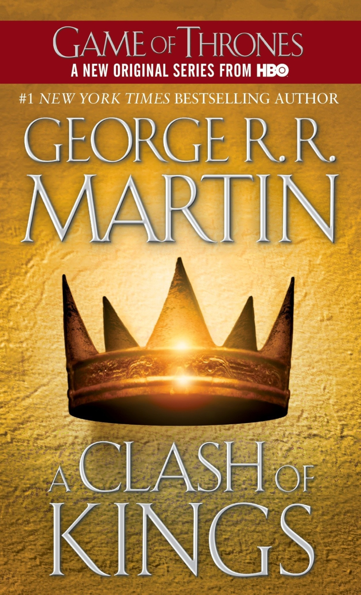
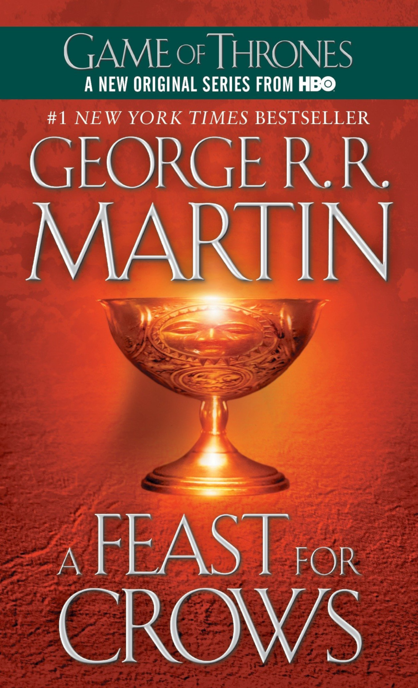
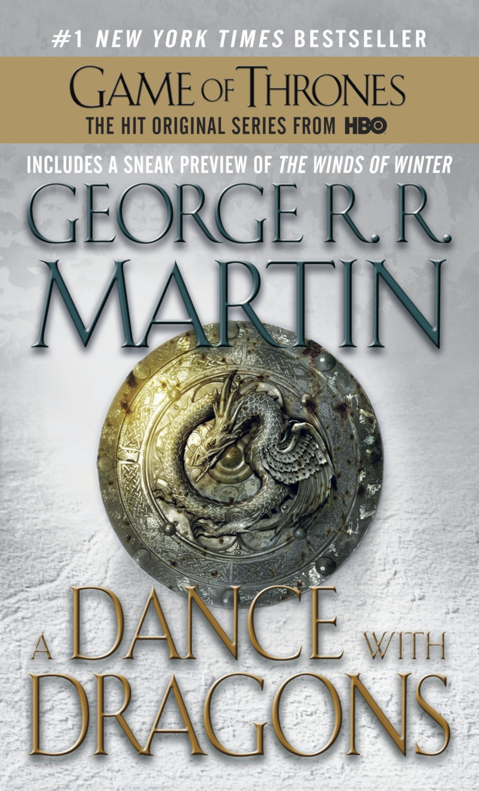

Long ago, in a time forgotten, a preternatural event threw the seasons out of balance. In a land where summers can last decades and winters a lifetime, trouble is brewing. The cold is returning, and in the frozen wastes to the north of Winterfell, sinister and supernatural forces are massing beyond the kingdom’s protective Wall. At the center of the conflict lie the Starks of Winterfell, a family as harsh and unyielding as the land they were born to. Sweeping from a land of brutal cold to a distant summertime kingdom of epicurean plenty, here is a tale of lords and ladies, soldiers and sorcerers, assassins and bastards, who come together in a time of grim omens.
Here an enigmatic band of warriors bear swords of no human metal; a tribe of fierce wildlings carry men off into madness; a cruel young dragon prince barters his sister to win back his throne; and a determined woman undertakes the most treacherous of journeys. Amid plots and counterplots, tragedy and betrayal, victory and terror, the fate of the Starks, their allies, and their enemies hangs perilously in the balance, as each endeavors to win that deadliest of conflicts: the game of thrones.
“We have been invited to a grand feast and pageant: George R.R. Martin has unveiled for us an intensely realized, romantic but realistic world.”—Chicago Sun-Times

A Clash of Kings
A comet the color of blood and flame cuts across the sky. And from the ancient citadel of Dragonstone to the forbidding shores of Winterfell, chaos reigns. Six factions struggle for control of a divided land and the Iron Throne of the Seven Kingdoms, preparing to stake their claims through tempest, turmoil, and war. It is a tale in which brother plots against brother and the dead rise to walk in the night. Here a princess masquerades as an orphan boy; a knight of the mind prepares a poison for a treacherous sorceress; and wild men descend from the Mountains of the Moon to ravage the countryside. Against a backdrop of incest and fratricide, alchemy and murder, victory may go to the men and women possessed of the coldest steel . . . and the coldest hearts. For when kings clash, the whole land trembles.
“[George R. R.] Martin amply fulfills the first volume’s promise and continues what seems destined to be one of the best fantasy series ever written.”—The Denver Post
A Storm of Swords
Of the five contenders for power, one is dead, another in disfavor, and still the wars rage as violently as ever, as alliances are made and broken. Joffrey, of House Lannister, sits on the Iron Throne, the uneasy ruler of the land of the Seven Kingdoms. His most bitter rival, Lord Stannis, stands defeated and disgraced, the victim of the jealous sorceress who holds him in her evil thrall. But young Robb, of House Stark, still rules the North from the fortress of Riverrun. Robb plots against his despised Lannister enemies, even as they hold his sister hostage at King’s Landing, the seat of the Iron Throne. Meanwhile, making her way across a blood-drenched continent is the exiled queen, Daenerys, mistress of the only three dragons still left in the world.
But as opposing forces maneuver for the final titanic showdown, an army of barbaric wildlings arrives from the outermost line of civilization. In their vanguard is a horde of mythical Others—a supernatural army of the living dead whose animated corpses are unstoppable. As the future of the land hangs in the balance, no one will rest until the Seven Kingdoms have exploded in a veritable storm of swords. . .
“A riveting continuation of a series whose brilliance continues to dazzle.”—Patriot News

A Feast for Crows
It seems too good to be true. After centuries of bitter strife and fatal treachery, the seven powers dividing the land have decimated one another into an uneasy truce. Or so it appears. . . . With the death of the monstrous King Joffrey, Cersei is ruling as regent in King’s Landing. Robb Stark’s demise has broken the back of the Northern rebels, and his siblings are scattered throughout the kingdom like seeds on barren soil. Few legitimate claims to the once desperately sought Iron Throne still exist—or they are held in hands too weak or too distant to wield them effectively. The war, which raged out of control for so long, has burned itself out.
But as in the aftermath of any climactic struggle, it is not long before the survivors, outlaws, renegades, and carrion eaters start to gather, picking over the bones of the dead and fighting for the spoils of the soon-to-be dead. Now in the Seven Kingdoms, as the human crows assemble over a banquet of ashes, daring new plots and dangerous new alliances are formed, while surprising faces—some familiar, others only just appearing—are seen emerging from an ominous twilight of past struggles and chaos to take up the challenges ahead.
It is a time when the wise and the ambitious, the deceitful and the strong will acquire the skills, the power, and the magic to survive the stark and terrible times that lie before them. It is a time for nobles and commoners, soldiers and sorcerers, assassins and sages to come together and stake their fortunes . . . and their lives. For at a feast for crows, many are the guests—but only a few are the survivors.
“Of those who work in the grand epic-fantasy tradition, Martin is by far the best…. [He] is a tense, surging, insomnia-inflicting plotter and a deft and inexhaustible sketcher of personalities…. This is as good a time as any to proclaim him the American Tolkien.”—Time Magazine

A Dance with Dragons
In the aftermath of a colossal battle, the future of the Seven Kingdoms hangs in the balance once again–beset by newly emerging threats from every direction. In the east, Daenerys Targaryen, the last scion of House Targaryen, rules with her three dragons as queen of a city built on dust and death. But Daenerys has three times three thousand enemies, and many have set out to find her. Yet, as they gather, one young man embarks upon his own quest for the queen, with an entirely different goal in mind.
To the north lies the mammoth Wall of ice and stone–a structure only as strong as those guarding it. There, Jon Snow, 998th Lord Commander of the Night’s Watch, will face his greatest challenge yet. For he has powerful foes not only within the Watch but also beyond, in the land of the creatures of ice.
And from all corners, bitter conflicts soon reignite, intimate betrayals are perpetrated, and a grand cast of outlaws and priests, soldiers and skinchangers, nobles and slaves, will face seemingly insurmountable obstacles. Some will fail, others will grow in the strength of darkness. But in a time of rising restlessness, the tides of destiny and politics will lead inevitably to the greatest dance of all. . . .
Dubbed “the American Tolkien” by Time magazine, George R. R. Martin has earned international acclaim for his monumental cycle of epic fantasy. Now the #1 New York Times bestselling author delivers the fifth book in his spellbinding landmark series–as both familiar faces and surprising new forces vie for a foothold in a fragmented empire.
Fire and Blood
Centuries before the events of A Game of Thrones, House Targaryen—the only family of dragonlords to survive the Doom of Valyria—took up residence on Dragonstone. Fire and Blood begins their tale with the legendary Aegon the Conqueror, creator of the Iron Throne, and goes on to recount the generations of Targaryens who fought to hold that iconic seat, all the way up to the civil war that nearly tore their dynasty apart.
What really happened during the Dance of the Dragons? Why did it become so deadly to visit Valyria after the Doom? What is the origin of Daenerys’s three dragon eggs? These are but a few of the questions answered in this essential chronicle, as related by a learned maester of the Citadel and featuring more than eighty all-new black-and-white illustrations by artist Doug Wheatley. Readers have glimpsed small parts of this narrative in such volumes as The World of Ice and Fire, but now, for the first time, the full tapestry of Targaryen history is revealed.